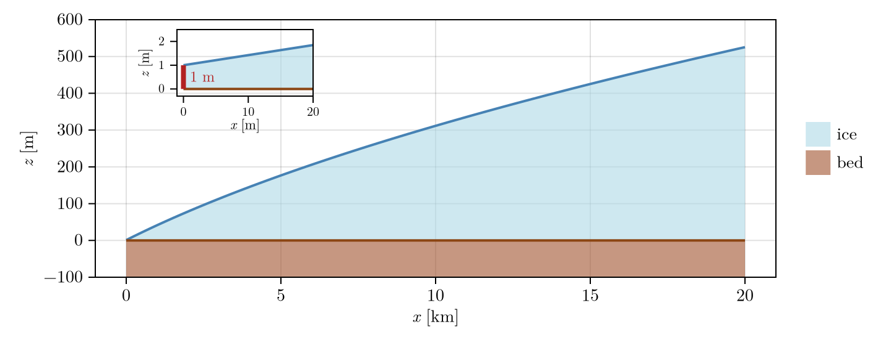
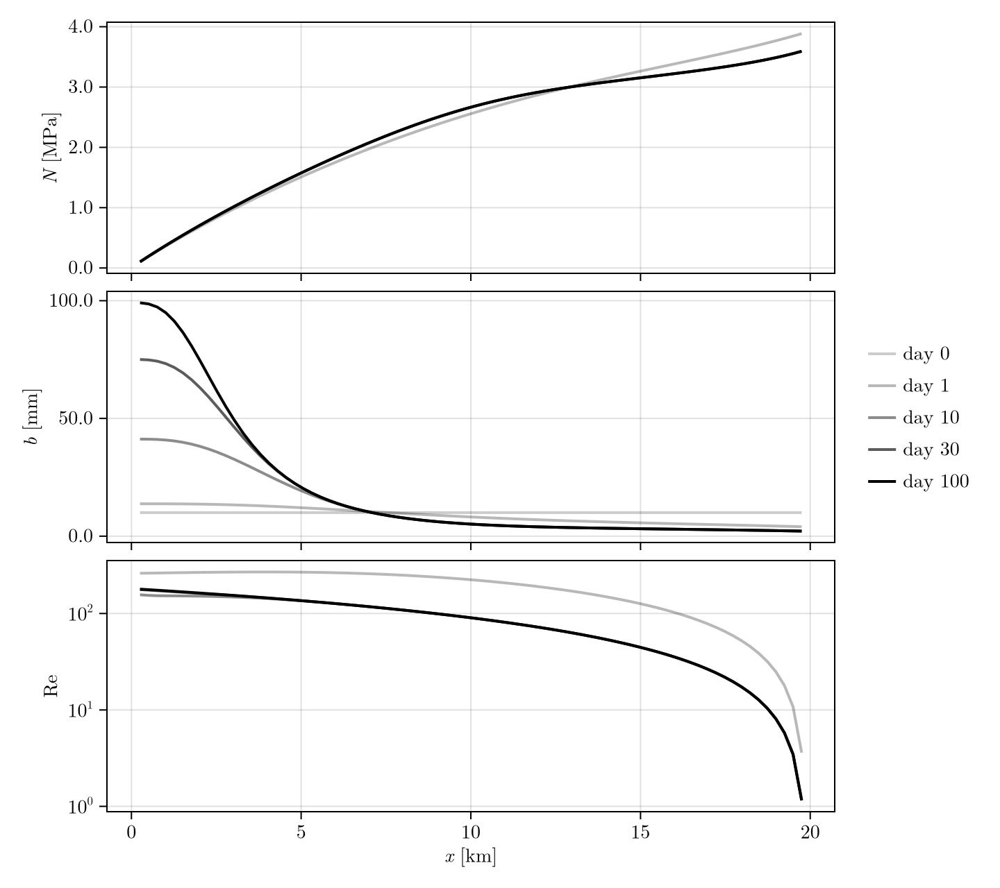

Tutorial
This tutorial covers every decision the user can make using a synthetic glacier.
| Step | Topic | Step | Topic |
|---|---|---|---|
| 1 | Preferences | 8 | Solvers |
| 2 | Grid | 9 | Gap scheme and time step |
| 3 | Mask | 10 | Output |
| 4 | State and initial conditions | 11 | Run and check |
| 5 | Parameters | 12 | Coupling to an ice-flow model |
| 6 | Sliding law and melt input | 13 | Plot |
| 7 | Physics of the water sheet |
using Shakti
using NetCDF
using CairoMakie
using Statistics: mean1. Preferences
Set once, before using Shakti, then restart Julia (set_preferences! writes LocalPreferences.toml).
backend:
"Threads"(default) CPU kernels; the only backend the sparse direct solvers (and CUDSS) work with"CUDA","Metal"fields live on the GPU; the matrix-free solvers work there:BiCGStabIterativeSolver(grid)for the default sheet,CGIterativeSolver(grid, MatrixFreeLinearSystem)for the filled sheet
floattype:
"Float64"(default)"Float32"halves memory, looser tolerances
cudss:
true(default) load CUDA.jl/CUDSS.jl under"Threads", soCUDSSDirectSolverworks on a GPU nodefalseCPU-only work, saves minutes of load time
Threads: start Julia with -t N.
backend, floattype("Threads", Float64)2. Grid
Grid(nx, ny, lx, ly)regular grid ofnx x nycells.lxandlyare the distances between the first and the last cell centre, not the extent of the cells' outer faces:dx = lx / (nx - 1),dy = ly / (ny - 1), andgrid.xruns from0tolx,grid.yfrom0toly. The cell centres aregrid.x,grid.y
nx, ny = 80, 20
lx, ly = 20000.0, 5000.0
grid = Grid(nx, ny, lx, ly);3. Mask
One code per cell. It sets the boundary conditions:
GROUNDEDgrounded ice where the subglacial hydrology of the hydraulic head and the gap between ice and bed are solved forLANDice-free land which is an outlet at atmospheric pressure (we use the gauge p_atm = 0)OCEANocean or floating ice which is an outlet at the sea-water pressure of the bedOTHER_BASINice outside the basin or no data and this cell is closed so no water crosses inFROZEN_BEDfrozen bed cell withp_w = 0that is closed (set byupdate_frozen_mask!described in step 12)
The grid edge is closed, so every grounded region needs an outlet. Water leaves through LAND/OCEAN faces and never enters so outflow_only_land and outflow_only_ocean are by default true and described in step 5.
mask = fill(GROUNDED, nx, ny)
mask[1, :] .= LAND # terminus at x = 0
mask[end, :] .= OTHER_BASIN
mask[:, [1, end]] .= OTHER_BASIN;4. The state and initial conditions
This step only creates the input arrays below, all in SI units. They are put into a State by set_initial_conditions! in step 6, once the parameters (step 5) and the sliding law (step 6) exist.
zb,zsbed and surface elevation [m]binitial gap height [m]; keep it aboveb_min(step 5)A_viscice rate factor in Glen's flow law [Pa^-3 s^-1]Ggeothermal flux [W/m2]ub_x,ub_ybasal sliding speed on the x- and y-faces [m/s]iebwater input from above such as from moulins [m/s]taub_x,taub_ybasal shear stress on the faces [Pa]; every sliding law (step 6) computes them fromNand the sliding speed in its own analytical form, at the start and in each Picard iteration. These two arrays are only the starting valuesPrescribedSlidingLawkeeps fixed (e.g. from an ice-flow model); for every other law the input is overwritten, so pass zeros
zb = zeros(nx, ny)
zs = [6 * (sqrt(x + 5000.0) - sqrt(5000.0)) + 1 for x in grid.x, y in grid.y] # SHMIP (de Fleurian et al. 2018), the ice-sheet margin geometry
b = fill(0.01, nx, ny)
A_visc = fill(5e-25, nx, ny)
G = fill(0.05, nx, ny)
ub_x = fill(1e-6, nx + 1, ny)
ub_y = zeros(nx, ny + 1)
ieb = fill(1.0 / (365 * 86400.0), nx, ny) # 1 m/a
taub_x, taub_y = zeros(nx + 1, ny), zeros(nx, ny + 1);The geometry along x is described by a flat bed and the ice-sheet margin of SHMIP (de Fleurian et al., 2018), which is 1 m thick at the outlet and about 520 m thick 20 km inland. The slab is uniform in the y direction.
xg = grid.x ./ 1e3
geo = Figure(size = (720, 280))
axg = Axis(geo[1, 1]; xlabel = L"x\ [\mathrm{km}]", ylabel = L"z\ [\mathrm{m}]",
xtickformat = vs -> [L"%$(round(Int, v))" for v in vs], ytickformat = vs -> [L"%$(round(Int, v))" for v in vs])
band!(axg, xg, zb[:, 1], zs[:, 1]; color = (:lightblue, 0.6), label = L"\mathrm{ice}")
band!(axg, xg, fill(-100.0, nx), zb[:, 1]; color = (:sienna, 0.6), label = L"\mathrm{bed}")
lines!(axg, xg, zs[:, 1]; color = :steelblue, linewidth = 2)
lines!(axg, xg, zb[:, 1]; color = :saddlebrown, linewidth = 2)
ylims!(axg, -100, 600)
Legend(geo[1, 2], axg; framevisible = false);inset at the top left: the terminus, 0 to 20 m, where the ice is 1 m thick
xt = range(0.0, 20.0, length = 101)
zt = [6 * (sqrt(x + 5000.0) - sqrt(5000.0)) + 1 for x in xt]
axt = Axis(geo[1, 1]; width = Relative(0.2), height = Relative(0.26), halign = 0.15, valign = 0.95, xticks = 0:10:20, yticks = 0:1:2, xlabelsize = 11, ylabelsize = 11, xticklabelsize = 10, yticklabelsize = 10, xlabelpadding = 0,
xgridvisible = false, ygridvisible = false,
xlabel = L"x\ [\mathrm{m}]", ylabel = L"z\ [\mathrm{m}]",
xtickformat = vs -> [L"%$(round(Int, v))" for v in vs], ytickformat = vs -> [L"%$(round(Int, v))" for v in vs],
backgroundcolor = :white)
band!(axt, xt, zeros(length(xt)), zt; color = (:lightblue, 0.6))
lines!(axt, xt, zt; color = :steelblue, linewidth = 2)
lines!(axt, xt, zeros(length(xt)); color = :saddlebrown, linewidth = 2)
lines!(axt, [0.0, 0.0], [0.0, 1.0]; color = :firebrick, linewidth = 4)
text!(axt, 1.0, 0.5; text = L"1\ \mathrm{m}", align = (:left, :center), fontsize = 12, color = :firebrick)
xlims!(axt, -1, 20); ylims!(axt, -0.3, 2.5)
geo
5. Parameters
ModelParameters(; ...), every field has a default. All of them:
| Variable | Units | Value | Comment |
|---|---|---|---|
rho_w | kg/m3 | 1000 | density of fresh water |
rho_sw | kg/m3 | 1027 | density of sea water, sets the pressure at OCEAN outlets |
rho_i | kg/m3 | 910 | density of ice |
g | m/s2 | 9.81 | gravitational acceleration |
nu | m2/s | 1.787e-6 | kinematic viscosity of water |
n | - | 3 | Glen's flow-law exponent |
omega | - | 1e-3 | laminar-turbulent transition parameter, (Sommers et al., 2018) Table 2; it sets the constitutive law, so changing it changes results |
L | J/kg | 334e3 | latent heat of fusion |
br | m | 0.1 | bed-bump height ((Sommers et al., 2018)); 0 switches opening by sliding off |
lr | m | 2.0 | bed-bump spacing ((Sommers et al., 2018)) |
b_c | m | 0 | creep cutoff length of (Felden et al., 2023) (Suhmo), Eq. 7. 0 selects StandardCreep (l_c = b); non-zero selects CreepCutoff. It is independent of diffusion_scheme (step 8): it works with or without WithDiffusion. Dataset-dependent gap runaways are known, see the CreepCutoff docstring |
ct | K/Pa | 7.5e-8 | change of the pressure-melting point with pressure; 0 drops the sensible-heat term the way ISSM's Shakti does (use mdot_includes_sensible = false for that instead) |
cw | J/(kg K) | 4.22e3 | heat capacity of water |
p_atm | Pa | 0 | pressure at LAND outlets (gauge) |
b_min | m | 1e-6 | minimum gap height. On the default (unfilled) sheet it is a minimum cavity size, not only a numerical floor: where the melt cannot fill a gap of b_min, the gap stays partly empty at p_w = 0 and N = p_o. Must be above 0 so K and the creep closure do not vanish |
b_max | m | Inf | upper clamp of the gap height; ISSM's Shakti uses 1.0. A finite value hides a gap runaway, Inf lets check_gap_height report it |
N_min | Pa | -Inf | lower clamp of N; off. On the default sheet IceUplift (step 7, (Wells et al., 2026)) already bounds N >= 0 physically; a value > 0 is refused with it |
N_max | Pa | Inf | upper clamp of N; off. On the default sheet UnfilledCavities (step 7, (Wells et al., 2026)) already bounds N <= p_o (p_w >= 0); a finite value is refused with it |
e_v | - | 0 | englacial void ratio ((Sommers et al., 2018) Eq. 13); 0 elliptic head equation, > 0 parabolic, see the Parabolic scheme page |
T_freeze | K | -1.0 | update_frozen_mask! (step 12) freezes a cell when its basal temperature relative to pressure melting drops below this |
T_hysteresis | K | 0.5 | a frozen cell thaws at T_freeze + T_hysteresis; 0 gives one threshold, at which a cell might flicker |
mdot_includes_G | - | true | melt rate includes the geothermal flux |
mdot_includes_frictional | - | true | melt rate includes frictional heating |
mdot_includes_potential | - | true | melt rate includes potential-energy dissipation |
mdot_includes_sensible | - | true | melt rate includes the sensible-heat term |
mdot_includes_qT | - | true | melt rate includes the conductive heat into the ice |
limit_freeze_on | - | true | floors the melt rate at the freeze-on the gap can absorb this step (freeze_on_capacity!, step 12), so freezing never takes b below b_min or more water than a cell holds; false lets the melt rate freeze as much as the energy balance asks |
outflow_only_land | - | true | LAND outlets let water out, never in |
outflow_only_ocean | - | true | the same for OCEAN outlets; false could help to model tidal intrusion |
p = ModelParameters();6. Sliding law and melt input
Sliding law
The sliding law gives the basal shear stress tau_b, which feeds the frictional melt. Each law below gives its magnitude $\tau_b$ from the effective pressure $N$ [Pa] and the sliding speed $u = \lVert \mathbf{u}_b \rVert$ [m/s], and points it along $\mathbf{u}_b$. It is recomputed in every Picard iteration. Coefficients (C, C_max, mu, ...) are uniform scalars or cell fields of size (nx, ny). Every law that depends on $N$ uses $\max(N, 0)$: a bed under water above overburden carries no shear. Some rows show one constructor for another law's form.
| Law | $\tau_b$ | Shakti.jl | Reference |
|---|---|---|---|
| Weertman | $C u^m$ | WeertmanSlidingLaw(grid, C; m = 1/3) | Weertman (1957) |
| Linear viscous | $\beta u$ | WeertmanSlidingLaw(grid, beta; m = 1) | |
| Linear in $N$ (ISSM's Shakti law) | $C^2 N u$ | LinearSlidingLaw(grid, C) | Sommers et al. (2023) |
| Budd (generalized power law) | $C N^q u^m$ | BuddSlidingLaw(grid, C; m = 1/3, q = 1) | Budd et al. (1979) |
| Till deformation | $u = A \tau_b^a N^{-b}$ | BuddSlidingLaw(grid, A^(-1/a); m = 1/a, q = b/a) | Boulton and Hindmarsh (1987) |
| Coulomb (Iken's bound, Mohr-Coulomb $\mu = \tan\phi$) | $\mu N$ | CoulombSlidingLaw(grid, mu) | Iken (1981) |
| Coulomb-capped power law | $\min\left(C N^q u^m,\; f N\right)$ | TsaiSlidingLaw(grid, C, f; m = 1/3, q = 0) | Tsai et al. (2015) |
| Pseudo-plastic (PISM) | $\left(c_0 + N \tan\phi\right) \left(u/u_0\right)^q$ | PseudoPlasticSlidingLaw(grid, tan(phi); q = 0.25, u0 = 100 m/a, c0 = 0) | Bueler and Brown (2009) |
| Cavitation, general family | $N\, f\!\left(u/N^n\right)$ | FunctionSlidingLaw(grid, (N, u, C) -> ..., C) | Lliboutry (1968), Fowler (1987) |
| Schoof | $\dfrac{C^2 u^m}{\left[1 + \left(\frac{C^2}{C_{\max} N}\right)^{1/m} u\right]^m}$ | SchoofSlidingLaw(grid, C, C_max; m = 1/3) | Schoof (2005) |
| MISMIP+ Schoof form | $\dfrac{C \alpha^2 N u^m}{\left[C^{1/m} u + (\alpha^2 N)^{1/m}\right]^m}$ | SchoofSlidingLaw(grid, sqrt(C), alpha^2) | Cornford et al. (2020) |
| Hydrology-modified Schoof | $\dfrac{C^2 u^m}{\left[1 + \left(\zeta/N\right)^{1/m} u\right]^m}$ | SchoofSlidingLaw(grid, C, C .^ 2 ./ zeta) | McArthur et al. (2026) |
| Linear combination | $\dfrac{C_{\max} N \xi + C^2 u^m}{1 + \xi}$, $\xi = \alpha u / N^n$ | LinearCombinationSlidingLaw(grid, C, C_max, alpha; m = 1/3, n = 3) | McArthur et al. (2026) |
| Gagliardini | $C N \left(\dfrac{\chi}{1 + \alpha \chi^q}\right)^{1/n}$, $\chi = \dfrac{u}{C^n N^n A_s}$, $\alpha = \dfrac{(q-1)^{q-1}}{q^q}$ | GagliardiniSlidingLaw(grid, C, A_s; q = 1, n = 3) | Gagliardini et al. (2007) |
| Regularized Coulomb, Shakti's (Gagliardini at $q = 1$, $C^n A_s = \lambda$) | $C N \left(\dfrac{u}{u + N^n \lambda}\right)^{1/n}$, $\lambda = 1.5 A$ | RegularizedCoulombSlidingLaw(C), RegularizedCoulombFieldSlidingLaw(grid, C) | |
| Regularized Coulomb, threshold speed | $C N \left(\dfrac{u}{u + u_0}\right)^q$ | RegularizedCoulombV0SlidingLaw(grid, C, u0; q = 1/3) | Joughin et al. (2019), Kazmierczak et al. (2024) |
| Till slip law | $N \tan\phi \left(\dfrac{u}{u + u_t}\right)^{1/p}$ | RegularizedCoulombV0SlidingLaw(grid, tan(phi), u_t; q = 1/p) | Zoet and Iverson (2020) |
| Hard-bed slip law | $C N \left(\dfrac{u}{u + (K N)^m}\right)^{1/m}$ | HelanowSlidingLaw(grid, C, K; m = 3) | Helanow et al. (2021) |
| Regelation and enhanced creep | $u = A_R \tau_b + A_C \tau_b^n$, solved for $\tau_b$ | RegelationCreepSlidingLaw(grid, A_R, A_C; n = 3) | Weertman (1957), Nye (1969), Kamb (1970) |
| Prescribed | from an ice-flow model | PrescribedSlidingLaw() keeps the taub_x, taub_y of step 4 |
Speeds (u0, u_t) are in m/s, like ub_x. FunctionSlidingLaw takes any magnitude f(N, u, C); on a GPU it must be a plain function or a closure over plain numbers.
Melt input
The melt input is the water that enters the bed from above, such as surface melt reaching the bed or moulins (ieb, step 4 [m/s]). It is a new input at the start of every step and is added to whatever a coupled model sets with set_ieb_external! (step 12).
| Melt input | Constructor | Inputs |
|---|---|---|
| Constant | ConstantMeltInput() | none: the ieb array of step 4 is used unchanged for the whole run |
| Seasonal | SeasonalMeltInput(; t_start, t_end, amplitude, offset, i_min) | see below |
| One moulin | GaussianMoulinMeltInput(grid, x0, y0, sigma, Q_max, ramp_duration) | see below |
SeasonalMeltInput is the seasonal experiment of (Sommers et al., 2018) (Sect. 3.3) on the SHMIP geometry (de Fleurian et al., 2018); see the Seasonal melt page. The input is the same in every cell. With the year fraction $f$ (0 to 1, repeating every year), it is $i_\min$ outside the melt window and $i = \mathrm{offset} - \mathrm{amplitude}\,\cos\left(2\pi (f - t_\mathrm{start}) / (t_\mathrm{end} - t_\mathrm{start})\right)$ inside it, which rises from $i_\min$ to a peak and falls back.
| Input | Units | Default | Meaning |
|---|---|---|---|
t_start | year fraction | 0.4 | start of the melt window (day 146) |
t_end | year fraction | 0.7 | end of the melt window (day 256) |
amplitude | m/a | 492.75 | amplitude of the cosine |
offset | m/a | 493.75 | mean of the cosine; the peak is offset + amplitude (986.5 m/a) |
i_min | m/a | 1.0 | input outside the window; the defaults make the window start and end at this value too |
GaussianMoulinMeltInput is one moulin, as in the channel test of (Felden et al., 2023) (Sect. 4.2): a fixed Gaussian spread of the discharge over the cells around the moulin, which is ramped up linearly in time and then held. The width of the Gaussian and the linear shape of the ramp are choices of this package, not of the paper.
| Input | Units | Meaning |
|---|---|---|
grid | - | the grid of step 2 |
x0, y0 | m | position of the moulin, in the coordinates of grid.x, grid.y |
sigma | m | standard deviation of the Gaussian footprint; keep it small against the domain, because the footprint is normalised so that it integrates to 1 over the grid |
Q_max | m3/s | the discharge of the moulin once the ramp is complete |
ramp_duration | s | time over which the discharge rises linearly from zero to Q_max |
sl = RegularizedCoulombSlidingLaw(0.25)
mi = ConstantMeltInput()ConstantMeltInput()alternatives: mi = SeasonalMeltInput(), or mi = GaussianMoulinMeltInput(grid, 10e3, 2.5e3, 200.0, 1.0, 30 * 86400.0)
The State holds every field of the model. set_initial_conditions! fills it from the grid, the parameters, the sliding law, the mask and the inputs of step 4.
state = State(grid)
set_initial_conditions!(state, grid, p, sl, mask, A_visc, zb, zs, b, G, ub_x, ub_y, ieb, taub_x, taub_y);7. The sheet
The sheet is the water layer between the ice and the bed. Four choices define it, one per keyword of Simulation. The defaults are the sheet of GlaDS-2 (Wells et al., 2026); each has an opt-out that gives Shakti's sheet (Sommers et al., 2018).
| Keyword | Default (GlaDS-2) | Opt-out (Shakti) | What it changes |
|---|---|---|---|
cavity_filling | UnfilledCavities() | FilledCavities() | UnfilledCavities lets the gap be only partly filled with water, where $p_w = 0$. FilledCavities assumes the gap is always full, so $p_w < 0$ (suction) appears where the gap cannot hold the head |
uplift | IceUplift() | NoUplift() | IceUplift caps the water pressure at the overburden: water above it lifts the ice, so $N \ge 0$. NoUplift lets $N < 0$. With both defaults $0 \le p_w \le p_o$ |
hydraulic_potential | SheetTopPotential() | BedPotential() | the potential that drives the flux $q$. SheetTopPotential: $q = -K \nabla (h + b)$ ((Wells et al., 2026) Eq. 7), BedPotential: $q = -K \nabla h$. See below |
gap_coupling | ConsistentGapCoupling() | ExplicitGapCoupling() | what the head equation assumes about how far the gap moves during the step. See below |
The stored head $h$ does not change between the two options, and neither does its definition: it is the bed-referenced head $z_b + p_w/(\rho_w g)$ in a cell whose gap is full (and $z_b + W - b$ in a partly empty cell, with $W$ the water depth). What changes is the potential whose gradient drives the flux, that is the level of the water:
| Option | Level that drives $q$ | In a full cell ($W = b$) | In a partly empty cell ($W < b$) |
|---|---|---|---|
BedPotential | $h$ | $z_b + p_w/(\rho_w g)$ | $z_b + W - b$ |
SheetTopPotential | $h + b$ | $z_b + p_w/(\rho_w g) + b$ | $z_b + W$ |
So the top of the water is $z_b + W$ where the gap is not full, and $+ b$ and $+ W$ are the same thing in a full cell, where $W = b$. The code adds $b$ (held at its start-of-step value) because $h$ already contains $W - b$ in the other regimes. The same level is used in the dissipation heat, which uses $q$. Without it, water and its dissipation heat would not follow differences in the gap height.
Face conductance
The flux between two cells needs the conductance $K$ on their shared face. k_face_choice picks how it is made from the two cells. Its default follows from the sheet: "implicit_upwind" with UnfilledCavities or IceUplift (so by default), "arithmetic" otherwise. In the table, $W$ is the water depth of a cell [m] (state.W), which equals the gap height $b$ where the gap is full. The head matrix is the linear system for the head, one row per cell, that the linear solver of step 8 solves in every Picard iteration.
k_face_choice | Face value | Head matrix | Time step | Notes |
|---|---|---|---|---|
"implicit_upwind" | $K$ of the upwind cell (the one the water flows out of), at the water depth $W$ of the end of the step | non-symmetric: the iteration is Newton's method in $W$ and adds the derivative of each face flux with respect to the water depth of its upwind cell | any | needs LUDirectSolver or CUDSSDirectSolver (:general) or BiCGStabIterativeSolver. With FilledCavities, NoUplift, ExplicitGapScheme (step 9) and the default gap coupling it warns: the explicit gap update overshoots the water depths the faces conduct by, so use FullyImplicitGapScheme. The other three choices have no such warning |
"upwind" | the same, but at the water depth of the start of the step | symmetric, so Cholesky and CG are allowed | $\Delta t < \Delta x\, W / (3 \lvert q \rvert)$, minutes at 100 m | the water depth is then explicit in time. Warns with UnfilledCavities or IceUplift |
"arithmetic" | mean of the two cells | symmetric | - | default with FilledCavities and NoUplift. Refused with UnfilledCavities or IceUplift, where it creates water |
"harmonic" | harmonic mean of the two cells, which is lower than the arithmetic mean where one cell has a small $K$ | symmetric | - | same restriction as "arithmetic" |
Gap coupling and the water budget
Each step solves the head equation and then moves the gap with the gap scheme (step 9). The head equation contains the change of the gap, which has not been computed yet, so it has to assume it. The water budget is the bookkeeping of the water: in a step, the water stored in the sheet changes by the input minus what leaves through the outlets. The budget closes when this holds to solver tolerance. water_created(sim) (step 11) reports the difference.
ConsistentGapCoupling()(default with a Picard solver): the head equation assumes the change the gap scheme itself makes. The head equation and the gap then store the same water, and the budget closes at any time step.ExplicitGapCoupling(): the head equation assumes the gap changes by $\Delta t \cdot \mathrm{rate}(N, b_\mathrm{old})$, as in Shakti (Sommers et al., 2018). When creep is fast ($\Delta t\, A N^3 > 1$) the gap scheme moves the gap by less than the head equation assumed, and the difference is created water. At $N < 0$ the gap can also run away. Use it only to reproduce Shakti or ISSM.
The Gap coupling page runs both on this tutorial's glacier and shows the created water against the time step.
Using the sheet in the code
sheet takes a Sheet, a bundle of the four choices. GlaDS2Sheet() is the default, so nothing needs to be passed for it:
sheet = GlaDS2Sheet() # UnfilledCavities, IceUplift, SheetTopPotential, ConsistentGapCoupling
sheet = ShaktiSheet() # FilledCavities, NoUplift, SheetTopPotential, ConsistentGapCoupling
sheet = ShaktiSheet(original = true) # FilledCavities, NoUplift, BedPotential, ExplicitGapCoupling
sim = Simulation(grid, state, nsteps, dt, p, mi, sl; ps = ps, sheet = sheet)ShaktiSheet(original = true) already contains BedPotential() and ExplicitGapCoupling(): nothing has to be passed on top of it. It reproduces the equations of Shakti bit for bit. A keyword passed to Simulation replaces the field of sheet it names, so one choice can be changed without building a new sheet:
sim = Simulation(grid, state, nsteps, dt, p, mi, sl; ps = ps, sheet = ShaktiSheet(), hydraulic_potential = BedPotential())
sim = Simulation(grid, state, nsteps, dt, p, mi, sl; ps = ps, cavity_filling = FilledCavities(), uplift = NoUplift()) # the GlaDS-2 sheet with two fields replaced
sim = Simulation(grid, state, nsteps, dt, p, mi, sl; ps = ps, k_face_choice = "upwind")Which to choose:
- default: bounded $p_w$, a closed water budget, large steps (hours to days)
- Shakti's sheet:
ShaktiSheet(), with which Cholesky and CG are allowed - the original equations bit for bit:
ShaktiSheet(original = true)
sheet = GlaDS2Sheet();8. Solvers
The head equation is nonlinear, and a Picard iteration solves it: each iteration freezes the coefficients, solves a linear system for the head with the linear solver and repeats until the head stops changing. Both objects are created explicitly:
ls = LUDirectSolver(grid) # linear solver
max_iter, tol = 200, 1e-6 # Picard iterations per step and tolerance
ps = PicardSolver(max_iter, tol, ls, grid) # Picard solver, passed to Simulation as ps = psPicardSolver(iters, tol, ls, grid; alpha, atol, check_every) works for any e_v (englacial storage), zero or not:
| Argument | Default | Meaning |
|---|---|---|
iters | - | the largest number of Picard iterations per step. A step that does not converge within it is counted in unconverged (step 11) and warns |
tol | - | relative tolerance: the iteration stops when the largest head change of an iteration, divided by the largest head, is below tol |
ls | - | the linear solver of the table below |
grid | - | the grid of step 2 |
alpha | nothing | under-relaxation in (0, 1]. The new head is alpha times the solve plus 1 - alpha times the previous iterate. Use alpha < 1 when the iteration stalls or oscillates; it needs more iterations. nothing is no relaxation |
atol | 0 | absolute tolerance [m of head]. If > 0 it replaces tol: stops when the largest head change is below atol. Useful because the relative test depends on the elevation of the glacier, about 4.5 km on Drang Drung |
check_every | 1 | test convergence every this many iterations. Each test needs a GPU-to-CPU transfer, so a larger value can save time on a GPU |
Linear solvers
ls solves the linear system of one iteration. Which are possible depends on whether the head matrix is symmetric, which step 7 gives per k_face_choice: the default sheet's matrix is not symmetric, Shakti's sheet's is. Simulation refuses Cholesky and CG with the default sheet and names the opt-outs.
| Constructor | Method | Runs on | Matrix | Notes |
|---|---|---|---|---|
LUDirectSolver(grid) | sparse LU (UMFPACK), a direct method | CPU | any | the default choice for the default sheet |
CUDSSDirectSolver(grid) (structure = :general) | sparse LU with NVIDIA cuDSS | the matrix is factorised on a GPU, the fields and the rest of the model stay on the CPU | any | the same method as LUDirectSolver, with the factorisation on the GPU, for a node that has one. The fastest on large grids |
CholeskyDirectSolver(grid) | sparse Cholesky, a direct method | CPU | symmetric | Shakti's sheet or "upwind" |
CUDSSDirectSolver(grid; structure = :spd) | Cholesky with cuDSS | factorised on a GPU, as above | symmetric | |
CGIterativeSolver(grid, SparseAssembledLinearSystem; ...) | conjugate gradients on the assembled sparse matrix | CPU | symmetric | preconditioners below |
CGIterativeSolver(grid, MatrixFreeLinearSystem; ...) | conjugate gradients without assembling the matrix | CPU or GPU, all fields on the GPU | symmetric | about 0.07 s per quiet step on an A100 at 800 x 200 and 0.08 s at 1600 x 400 (CUDSSDirectSolver(grid; structure = :spd): 0.10 s and 0.24 s) |
BiCGStabIterativeSolver(grid; ...) | BiCGStab (a Krylov method for non-symmetric matrices), matrix-free | CPU or GPU, all fields on the GPU | any | the default sheet with the fields on a GPU: about 0.2 s per step on an A100 from 800 x 200 to 1600 x 400 cells (CUDSSDirectSolver is faster on smaller grids, slower on larger ones) |
Preconditioners
An iterative solver needs a preconditioner: an approximate inverse of the matrix that makes it converge in few iterations. A direct solver has none. The choices are made when the solver is built, by keywords:
| Solver | Keyword | Default | Preconditioner |
|---|---|---|---|
CGIterativeSolver(grid, SparseAssembledLinearSystem) | amg = true | on | algebraic multigrid (Ruge-Stuben, AlgebraicMultigrid.jl): near-constant iteration count as the grid grows. CPU only |
amg_refresh_every = 1 | 1 | rebuild the multigrid hierarchy every this many solves; a larger value saves time when the matrix changes slowly | |
chebyshev_degree = k | nothing | Chebyshev polynomial of degree k instead of amg (set amg = false); it needs no dot products. Its optional keywords are chebyshev_nsteps_estimate = 15 (Lanczos steps), chebyshev_bounds = :gershgorin (or :lanczos) for the eigenvalue bounds and chebyshev_eig_ratio = 30 | |
amg = false with no chebyshev_degree | Jacobi: the inverse of the diagonal. Cheapest per iteration, but the iteration count grows with the grid | ||
CGIterativeSolver(grid, MatrixFreeLinearSystem) and BiCGStabIterativeSolver(grid) | multigrid = true | on | aggregation multigrid, run on the GPU: 2 x 2 cells are merged per level. It holds the iteration count at 5 to 12 from 80 x 20 to 1600 x 400 cells |
nsmooth = 2 | 2 | Gauss-Seidel smoothing sweeps before and after each coarse correction | |
coarse_scale = 2.0 | 2.0 | scale of the coarse correction; above 1 it compensates for the coarse grid undershooting smooth errors. The defaults gave the fewest iterations | |
multigrid = false | Jacobi. With CGIterativeSolver you can use chebyshev_degree = k instead (not together with multigrid). On a GPU, Jacobi was faster than Chebyshev in the sizes tested |
BiCGStabIterativeSolver also takes rtol and atol (the tolerances of its own residual, default sqrt(eps)) and itmax (the iteration cap, 0 is Krylov.jl's default of twice the number of cells). A solve that stops before its tolerance warns.
Other solver keywords of Simulation:
head_extrapolation_order = 1(default) the first guess of each head solve is the head extrapolated in time from the last converged steps (1linear,2quadratic): fewer Picard iterations, the same answer.0starts from the previous headcell_N_clamping = NoCellNClamping()(default)CellNClamping(Dict((i, j) => (nmin, nmax)))clampsNin the named cells only, on top of the globalN_min/N_maxof step 5: a patch for a few cells that misbehave, leaving the rest of the domain free to reach low or negativeNdiffusion_scheme = NoDiffusion()(default)WithDiffusion(ls2)adds Suhmo's channel-wall diffusion of the gap (Felden et al., 2023). It solves a second linear system, for the gap, sols2is a second solver instance next to the head solver'sls; see the Suhmo page
ls = LUDirectSolver(grid)
max_iter, tol = 200, 1e-6 # Picard iterations per step and tolerance
ps = PicardSolver(max_iter, tol, ls, grid);9. Gap scheme and time step
gap_scheme (keyword) sets how the gap height $b$ is advanced in time:
FullyImplicitGapScheme()(default) the creep closure and the opening by sliding are both evaluated at the new value of $b$. It is unconditionally stable: it holds for any time stepdt, for any bump heightbrand any sliding speed. It needs no iteration, because the sliding opening is piecewise linear in $b$ and is solved in closed formExplicitGapScheme()forward Euler, with the opening taken at the old $b$. It overshoots the bump heightbronce $dt\, u_b / l_r > 1$, so it is stable for small steps only
Under WithDiffusion this choice is ignored, because the diffusion term involves the spatial derivative of $b$. The gap equation is then non-local in space: each cell depends on its neighbours, so it must be solved as a linear system $Ax = b$ for all cells at once, as the head equation is (this is the second solver ls2 of step 8), and it has its own scheme.
Time step (timestep_scheme keyword):
FixedTimeStep()(default)dtevery step; with the default sheet hours to days workAdaptiveTimeStep(grid, state; dt_min, dt_max, target_time, safety_factor = nothing)dtis halved when the head solve does not converge (the step is retried) and grown after a few fast steps, always betweendt_minanddt_max
| Argument | Meaning |
|---|---|
dt_min, dt_max | smallest and largest step allowed, in seconds |
target_time | the total simulated time (seconds, counted from the start of this run) that the run should cover. run! stops once the simulated time reaches it, and the last step is shortened to land exactly on it. The number of steps is not known in advance, so nsteps of the Simulation is only an upper bound, e.g. ceil(target_time / dt_min) |
safety_factor | nothing (default): no extra cap, dt is set by the head solve alone. A number, e.g. 0.3: also require $dt \le \text{safety\_factor}/r$, where ``r = A |
use_percentile, percentile | take the percentile-th quantile of $r$ instead of its maximum, so that a single stiff cell does not shrink the step for the whole domain (needs a sort each step, so it is slower) |
For example, one year with a step that adapts between 10 minutes and 2 days and is also capped by the gap rate:
ts = AdaptiveTimeStep(grid, state; dt_min = 600.0, dt_max = 2 * 86400.0, target_time = 365 * 86400.0, safety_factor = 0.3)The tutorial uses FixedTimeStep().
gs = FullyImplicitGapScheme()
ts = FixedTimeStep()
dt, nsteps = 86400.0, 365;10. Output
observer (keyword), given the State field names to record (obs, e.g. "N", "b", "h", "Re", "q_x", "W") and the step indices to record them at (times, 0 = initial state):
IOObserver(obs, times, NetCDFFileWriter(), path)(orHDF5FileWriter(),JLD2FileWriter()) fields written topath; use this for long runsIOObserver(obs, times, CSVFileWriter(), path)min, max and mean per field and time onlyLiveObserver(obs, times)kept in memory, for short interactive runsNoObserver()(default) nothing recorded
To save checkpoints and restart a run, see the end of step 11.
path = joinpath(mktempdir(), "tutorial.nc")
obs = IOObserver(["N", "b", "Re", "po"], 0:nsteps, NetCDFFileWriter(), path)
sim = Simulation(grid, state, nsteps, floattype(dt), p, mi, sl; ps = ps, sheet = sheet, gap_scheme = gs,
timestep_scheme = ts, observer = obs);11. Run and check
After each gap update check_gap_height looks for a gap runaway: it errors if b is not finite in a grounded cell or exceeds the ice thickness there by more than 1 km (every later step would carry it), and warns once if it exceeds the thickness by less. Under FilledCavities, check_filled_sheet also warns once when cells reach $p_w < 0$ or a step creates water. A gap that is always full must hold a fixed volume of water. Where the inflow is too small to keep it full against the creep closure, it can only create water, drop to a negative water pressure (suction, $p_w < 0$), or let the gap partly empty. UnfilledCavities takes the last option, so it creates no water and has no suction.
Water budget
Every simulation keeps a record of the water it creates or loses by mistake, sim.wb, which is read with water_created(sim). The model is correct if the water stored in the gaps changes only by the melt input minus what leaves through the outlets, and the budget measures how far it is from that. It reports:
- per step:
created, the water created beyond the sources and fluxes, andinput, the water that enters the grounded region (both in m³) - over all steps:
total_input, andtotal_created, the net created water (created minus lost) gross_createdandgross_lost: created and lost water added up separately, cell by cell and step by step. Water created in one place and lost in another cancels intotal_createdbut not hereunconverged: the number of steps whose head solve did not converge (each such step also warns once)
verbose = true in Simulation prints, at each step, the Picard iterations, the dt under AdaptiveTimeStep, the water created and its fraction of the input, the count of unconverged steps once there is one, and under FilledCavities the number of cells with $p_w < 0$.
run!(sim)
gr = Array(state.mask) .== GROUNDED
(converged = sim.hs.ps.converged,
N_over_po = extrema(Array(state.N)[gr] ./ Array(state.po)[gr]),
b = extrema(Array(state.b)[gr]))(converged = true, N_over_po = (0.7718059859638939, 1.0), b = (0.002153544438888274, 0.10443822242589029))Checkpoints and restarts
run! can save a checkpoint every few steps, so that a run killed by a job time limit or a crash does not start again from day 0. The checkpoint file holds the latest state only: each save overwrites the previous one, and the last step is always saved. These code blocks are not run here, because the tutorial run is short:
run!(sim; checkpoint_every = 50, checkpoint_path = "checkpoint.nc") # save every 50 stepsThere are two ways to continue from a checkpoint. In both you first build the Simulation again exactly as before (same grid, parameters, options and output path) and then call run! with one of these keywords (never both):
| Keyword | Use it when | nsteps of the new Simulation | Output file |
|---|---|---|---|
restart_path | the run was killed before reaching its target | the original total, as the run continues from the saved step up to it | the same file, reopened and appended to |
extend_path | the run finished and you want to go further | the number of additional steps | a new file (give the new Simulation a new path), whose first frame has the saved time, so day 365 is day 365 and not day 0 |
## the run was killed: rebuild `sim` as above, then finish the same 365 steps
run!(sim; restart_path = "checkpoint.nc", checkpoint_every = 50, checkpoint_path = "checkpoint.nc")
## the run finished: build a new `sim` with nsteps = 365 (one more year) and a new output path, then
run!(sim; extend_path = "checkpoint.nc")What a checkpoint stores:
- the
State, the time, and the currentdt - the recent heads that
head_extrapolation_orderuses for the first guess of each head solve - for
AdaptiveTimeStep, its controller: the step it asks for next, how many fast steps in a row it has seen, and how many steps it has rejected - the water budget totals of
sim.wb
A resumed run therefore gives the same results and the same counts as one that was never interrupted. A checkpoint written by an older version that did not store one of these starts that part again from zero.
12. Coupling to an ice-flow model
Between steps (step!(sim) advances one) a host model can:
- change the geometry or sliding speed in
state(zs,zb,ub_x,ub_y), refreshed at the next step set_mask!(state, p, new_mask)follow its grounding line and ice extentupdate_frozen_mask!(state, p, T_prime_b)freeze and thaw cells from the basal temperatureset_ieb_external!(state, ieb_external)add its englacial or surface input [m/s]freeze_on_capacity!(C, sim; dt)the water the bed can freeze on indt, for its thermal model
state.N is the effective pressure the sliding law needs.
13. Plot
The slab is uniform in y, so only a profile along x is plotted: the effective pressure, the gap height and the Reynolds number on days 0, 1, 10, 30 and 100, from the NetCDF file.
Nis smallest at the outlet but not zero. The ice there is thin (11.5 m at the first grounded cell, 1 m at the terminus itself), so $p_o$ is only 0.1 MPa. The water drains at atmospheric pressure, $p_w = 0$, so $N = p_o - p_w = p_o$ andN/p_o = 1there. $N$ would reach zero only if $p_w$ rose to $p_o$.Nis set within a day. The gap takes about 100 days: it opens near the outlet, where the flux is largest and the thin ice closes it slowly (closure goes asA N^3 b), and closes inland.NandRestart on day 1: on day 0 they come from the starting head, not from a solve.
N, bb, Re = (ncread(path, v) for v in ("N", "b", "Re"))
days = round.(Int, ncread(path, "time") ./ 86400)
frames = [1, 2, 11, 31, 101] # days 0, 1, 10, 30, 100
jm = ny ÷ 2 # one row along x
ix = findall(gr[:, jm]) # grounded cells only
xkm = grid.x[ix] ./ 1e3
# tick labels, and log ticks at integer powers of ten
lin(vs) = [L"%$(round(v, digits = 1))" for v in vs]
pow10(vs) = [L"10^{%$(round(Int, log10(v)))}" for v in vs]
decades(v) = 10.0 .^ (floor(Int, log10(minimum(v))):ceil(Int, log10(maximum(v))))
# black lines whose opacity grows with time, from 0.2 on day 0 to 1 on day 100 (a square root of time, so that the
# early days stay distinguishable: linear in time would make days 1, 10 and 30 almost the same shade)
opacity(k) = 0.2 + 0.8 * sqrt(days[k] / days[frames[end]])
# one panel per quantity: label, profile along x at frame k, y scale, tick format, frames drawn
panels = [(L"N\ [\mathrm{MPa}]", k -> N[ix, jm, k] ./ 1e6, identity, lin, frames[2:end]),
(L"b\ [\mathrm{mm}]", k -> bb[ix, jm, k] .* 1e3, identity, lin, frames),
(L"\mathrm{Re}", k -> Re[ix, jm, k], log10, pow10, frames[2:end])]
fig = Figure(size = (720, 640))
for (r, (ylabel, profile, yscale, ytickformat, ks)) in enumerate(panels)
last_row = r == length(panels)
yticks = yscale === log10 ? decades(reduce(vcat, profile.(ks))) : Makie.automatic
ax = Axis(fig[r, 1]; ylabel, yscale, yticks, ytickformat,
xlabel = last_row ? L"x\ [\mathrm{km}]" : "", xticklabelsvisible = last_row,
xtickformat = vs -> [L"%$(round(Int, v))" for v in vs])
for k in ks
lines!(ax, xkm, profile(k); color = (:black, opacity(k)), linewidth = 2, label = L"\mathrm{day}\ %$(days[k])")
end
r == 2 && Legend(fig[1:3, 2], ax; framevisible = false)
end
rowgap!(fig.layout, 8)
fig